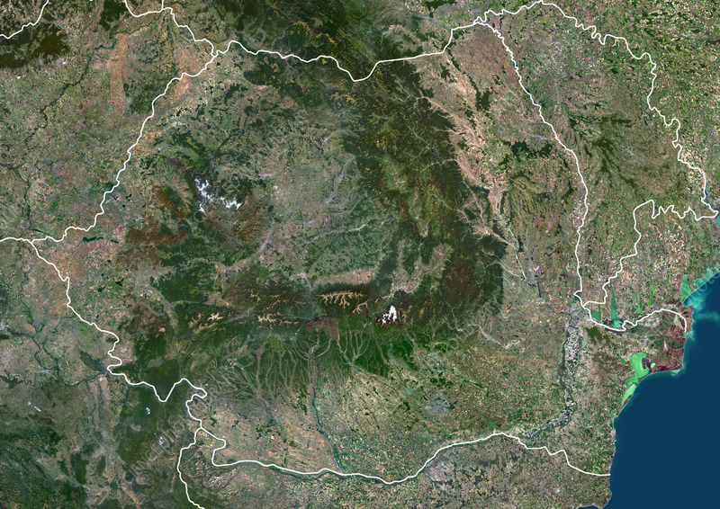

A geospatial investigation into how land cover changed across Romania between 2021 and 2023, and how those changes relate to air-pollutant trends (NO₂, PM2.5, PM10) and the people exposed to them.
Air pollution is one of the most pressing environmental and public-health challenges of our time. It’s defined as the presence of harmful gases and particulates in the atmosphere, and it originates from industrial emissions, vehicle exhaust, fossil-fuel combustion and agriculture, as well as natural events such as wildfires and volcanic eruptions. Literature consistently centers it as the driver of climate change, respiratory and cardiovascular disease, and broader environmental degradation.
This laboratory studies the relationship between land cover change and atmospheric trends using free and open geospatial data. This work focuses on transitions between 2021 and 2023 on land cover and its spatial and statistical relationships with fluctuations in key pollutants (NO₂, PM2.5, PM10), finally assessing how those combined factors relate to population exposure in Romania.
Source: EEA, "Healthy environment, healthy lives," 2019.
Romania is the twelfth-largest country in Europe by area (238,397 km²) and the sixth-most populous EU member state, with roughly 19 million inhabitants. Its capital and economic centre is Bucharest, while other major cities include Cluj-Napoca, Iași, and Timișoara .
Despite legal standards being in place, Romania's annual PM2.5 has been consistently three times the WHO guideline in recent years. This is linked to a rising trend of stroke and ischaemic heart-disease mortality.

| Indicator | 2022 | 2023 | 2025 |
|---|---|---|---|
| PM2.5 annual mean (extent of the problem) | 16 μg/m³ · 3× WHO | 13 μg/m³ · 3× WHO | 13 μg/m³ · 3× WHO |
| Deaths from stroke & ischaemic heart disease linked to air pollution | 15% | 21% | 21% |
| Legal standards for PM2.5 implemented | Yes | Yes | Yes |
| Compliant with WHO Air Quality Guidelines | No data | No | No |
Full processing details are on the Methodology page.